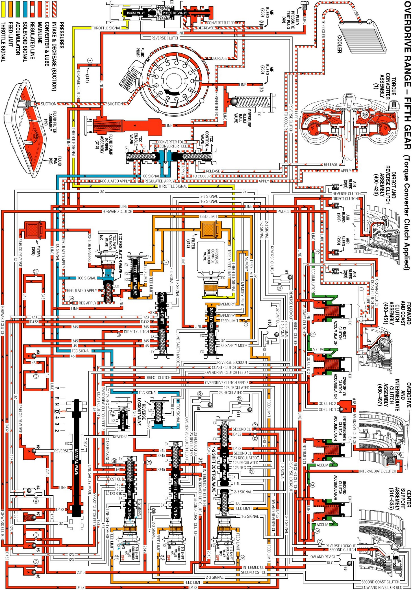

Overdrive Range, Fifth Gear - Torque Converter Clutch Applied
Overdrive Range, Fifth Gear - Torque Converter Clutch Applied
When the Transmission Control Module (TCM) determines that the engine and transmission are operating properly to engage the Torque Converter Clutch (TCC), the TCM energizes the TCC PWM solenoid valve. The following events occur in order to apply the torque converter clutch:
OFF
- At this time the Torque Converter Clutch is considered to be disengaged (OFF).
Stage 1
- The TCM pulses the TCC PWM solenoid valve to approximately 15% duty cycle from point S to point A. 2345 or Reverse fluid at the TCC PWM solenoid valve is "pulsed" into the TCC Signal fluid circuit. The TCC Signal fluid pressure at point A is strong enough to move the TCC Control, and TCC Enable valves against spring force. The TCC Control valve moves and allows Release fluid to begin to exhaust from the torque converter and enter the Converter FDL fluid circuit. The TCC Enable valve moves and allows Release/Converter FDL fluid to exhaust into the sump. This stage is designed to move the TCC Control and TCC Enable valves from the released position toward the applied position: there is not enough pressure to apply the TCC.
Stage 2
- The TCC PWM solenoid valve duty cycle is ramped up from point A to point B. TCC Signal fluid pressure is now strong enough to move the TCC Regulator valve against spring force. Line pressure from the pump enters the Regulated Apply circuit at the TCC Regulator valve. Regulated Apply fluid is routed through the TCC Enable valve and through the TCC Control valve into the Apply circuit. The pressure valve in the Regulated Apply circuit is precisely controlled to maintain a smalll amount of slippage (20 to 80 RPM) between the engine and the turbine, reducing driveline torsional disturbances.
Stage 3
- Now the Regulated Apply pressure is increased. This is caused by the TCC PWM solenoid valve duty cycle being increased from point B to point C, to maximum duty cycle. This extra pressure ensures that the apply force on the TCC pressure plate is not at the slip threshold, but in the condition of full lock up.
When the TCC pressure plate is applied, it is held against the torque converter cover. Since it is splined to the converter turbine hub, it provides a mechanical coupling - direct drive of the engine to the transmission gear sets. This mechanical coupling eliminates the small amount of slippage that occurs in the fluid coupling of a torque converter, resulting in a more efficient transfer of engine torque through the transmission and to the drive wheels.
On
- At this time the Torque Converter Clutch is considered to be engaged - ON.
Stage 4
- During this stage, the apply pressure from the TCC Regulator valve is decreased by the TCC PWM solenoid valve duty cycle dropping. Spring force pushes the valve back and reduces the Regulated Apply pressure. This reduces the apply force on the TCC pressure plate to the slip threshold. This gets the TCC pressure plate ready for a smooth release.
Stage 5
- The TCC PWM solenoid valve duty cycle is ramped down through this stage. This action allows the Regulated Apply pressure to start at the slip threshold, and decrease to near "0" pressure over a very short time. The Regulated Apply pressure value from the TCC Regulator valve at this duty cycle should fully release the TCC pressure plate. Slip speed should be at the maximum value.
Stage 6
- The TCM pulses the TCC PWM solenoid valve to a value of "0". Now the TCC Control and TCC Enable valves return to their released positions - away from the spring. Release fluid is now directed back to the torque converter. This stage is designed to move the TCC Control and TCC Enable valves to the released position.
OFF
- At this time the Torque Converter Clutch is considered to be disengaged - OFF.
Overdrive Range, Fifth Gear - Torque Converter Clutch (TCC) Applied
Overdrive Range, Fifth Gear - Torque Converter Clutch (TCC) Applied:
